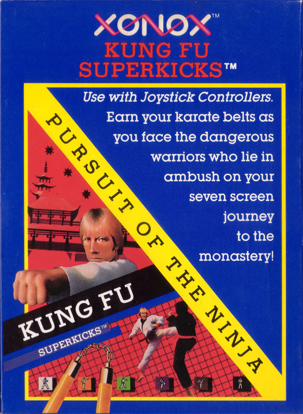
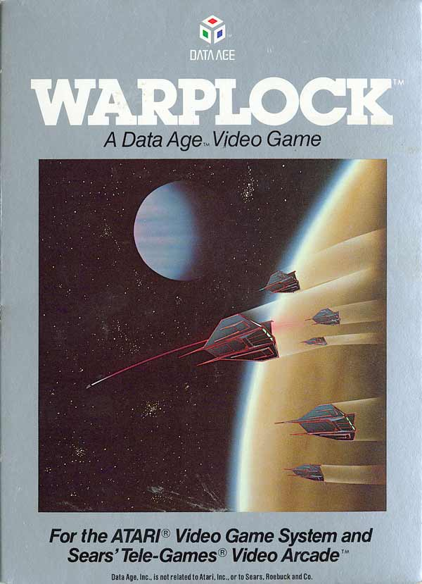
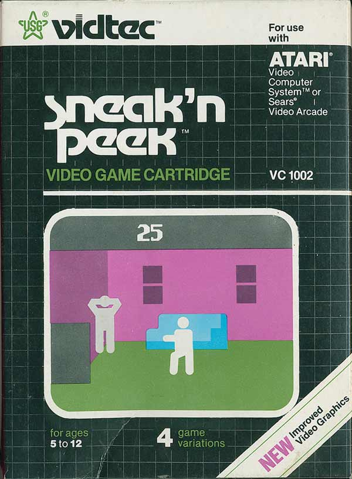
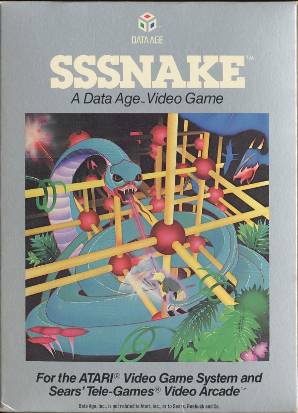
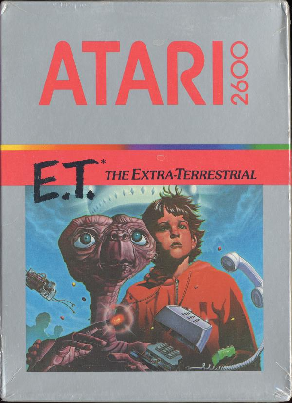

En 1982 no existia Metacritic. Contamos en cuantas listas historicas de peores aparece cada juego (Digital Press 1991, Creative Loafing, CBR, Orphaned Computers, SVG), sumamos la nota cuando hay suficientes criticas y la leyenda de cada cartucho. Solo juegos con licencia y venta normal.
03
#10
EN 1 LISTA

Atari 2600
TARROVISIONCH 10
NO SIGNAL
Inserta gameplay aqui
CHUCK NORRIS SUPERKICKS
Atari 2600 · 1983-84 · XONOX · ORPHANED COMPUTERS (CAJA: REEDICION KUNG FU SUPERKICKS)
▶ PREMIO AL KUNG FU CON LICENCIA VENCIDALlegar a un monasterio en seis minutos a patadas, con el nombre de Chuck Norris en la caja. Cuando la licencia expiro lo rebautizaron Kung Fu Superkicks y siguio igual. Xonox, la de los cartuchos double-ender, nacio en 1983 y cayo con el crash.
▶ PREMIO AL PORT MAS DOLOROSO DE VEREl port del arcade de Konami: pintas una grilla mientras te persiguen cerdos y guerreros. Digital Press lo incluyo en su lista de los peores de 1991: lento, y tan doloroso de ver como de jugar. Los de Monopoly, pero sin suerte.
05
#8
EN 2 LISTAS

Atari 2600
TARROVISIONCH 08
NO SIGNAL
Inserta gameplay aqui
WARPLOCK
Atari 2600 · 1982 · DATA AGE · DIGITAL PRESS 1991 (#8) + CBR
▶ PREMIO AL CLON MAS APURADOUn clon de Space Invaders con paddles: te mueves abajo, disparas arriba y se acabo. Una pantalla, una idea. Salio en el lote inicial de Data Age, una empresa que duro poco mas de un año.
▶ PREMIO AL STAR FOX QUE NO ES STAR FOXSale diez años antes del de Nintendo y no tiene nada que ver. Recoges cristales en el planeta Beta-7 con un enemigo y una gema por pantalla, y la dificultad no cambia nunca. Costaba US$ 9,95.
07
#6
EN 2 LISTAS

Atari 2600
TARROVISIONCH 06
NO SIGNAL
Inserta gameplay aqui
SNEAK 'N PEEK
Atari 2600 · 1982 · U.S. GAMES (VIDTEC) · SVG + CBR
▶ PREMIO AL ESCONDITE MAS ESPELUZNANTEEl escondite en cartucho: uno se esconde en una casa que da un poco de susto y el otro tiene que no mirar. Hay 20 escondites y casi nada de animacion. Quedate quieto y no respires.
▶ PREMIO AL INODORO EXPLOSIVOEl primer cartucho de Tigervision es un clon del primer nivel de Donkey Kong. Electronic Games dijo que los enemigos parecian inodoros antiguos con la mecha encendida. Arcade Express le puso 4 de 10.
▶ PREMIO AL PROTECTOR DE PANTALLA CON JOYSTICKMismo programador que Star Fox, mismo precio de oferta (US$ 9,95). Una critica lo describe como un protector de pantalla primitivo que tienes que operar a mano. Pilotas insectos pixelados sin mucho sonido.
▶ PREMIO AL KARATE SIN GOLPESDos peleadores y cero logica: sin colisiones que se entiendan, los golpes pegan o no segun el humor del cartucho. Una critica dijo que era un insulto a quien gasto plata en un videojuego. La edicion original hoy es rarisima.
11
#2
EN 3 LISTAS

Atari 2600
TARROVISIONCH 02
NO SIGNAL
Inserta gameplay aqui
SSSNAKE
Atari 2600 · 1982 · DATA AGE · DIGITAL PRESS 1991 (#1) + CREATIVE LOAFING + CBR
▶ ENCABEZA LA LISTA DE DIGITAL PRESSEn 1991 Digital Press abrio con el su lista de los 10 peores del 2600: 'todos los graficos son bloques'. Eres un cazador en el Amazonas contra serpientes hechas de bloques. Salio en octubre de 1982 y la empresa cerro siete meses despues.
12
#1
NOTA 46%

Atari 2600
TARROVISIONCH 01
NO SIGNAL
Inserta gameplay aqui
E.T. THE EXTRA-TERRESTRIAL
Atari 2600 · 1982 · ATARI · 7 CRITICAS EN ATARIAGE: 46% · LA LEYENDA
▶ PREMIO AL HOYO MAS FAMOSO DE LA HISTORIACinco semanas para hacerlo, una licencia de US$ 20 a 25 millones y un hoyo del que no puedes salir. Atari enterro cartuchos sobrantes en un vertedero de Nuevo Mexico; en 2014 recuperaron unos 1.300 juegos y entre ellos habia E.T. El mito del peor juego de la historia.
13
ANALISIS DEL TOP
LOS AÑOS EN QUE TODOS HICIERON JUEGOS
Los 10 salieron entre 1982 y principios de 1984, el momento en que cualquiera podia hacer un cartucho para el 2600: empresas de un solo año, precios de oferta y mucho apuro. Data Age duro 13 meses y Mythicon metio dos juegos en la lista. No fue un solo juego el que tumbo la industria: fue la inundacion.
14
GAME OVER
INSERTA MONEDA PARA CONTINUAR
Coco cierra tocando el tema de Game Over en bateria. ¿Que consola quieren que siga en el Top Peores? Cuentanos en los comentarios cual fue el peor cartucho que les toco jugar.